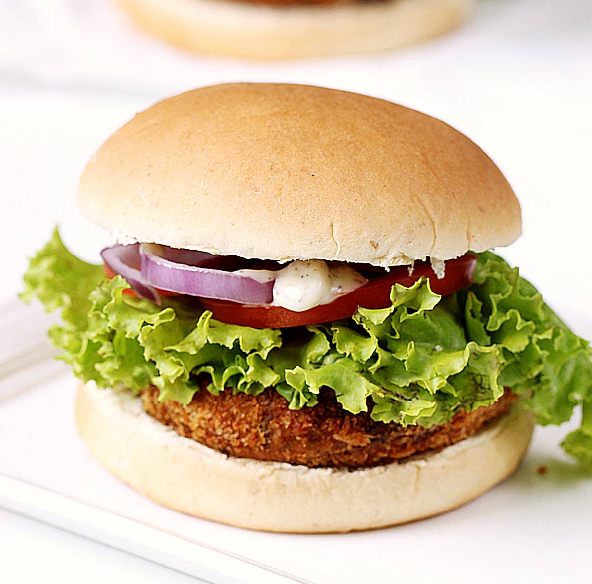

Veg Burger recipe - Learn to make Veggie Burger at home with my easy step-by- step recipe guide. This is the ultimate Veggie Burger that's easy to make, holds together well and is incredibly delicious with bursting flavors of spices. Veggie Burgers can be so tasteless & lifeless. But not these !! You will absolutely love the super crispy veggie patties loaded onto soft butter toasted buns, topped with onions, tomatoes, lettuce & a creamy delicious dressing.

Ingredients
- For the Patties
- Veggies:Potatoes, carrots, French beans, and green peas
- Aromatics & Herbs:Ginger, green chilies, and fresh coriander leaves.
- Spices:Garam masala (or taco seasoning) and salt.
- Binding:Bread crumbs (or poha powder).
- For Coating & Frying
- Batter:Flour (gram, rice, or corn flour) and water.
- Crust: Bread crumbs or panko crumbs.
- Frying: Cooking oil.
- For the Burger Sauce
- Mayonnaise (or Greek yogurt), olive oil, lemon juice, mustard powder, black pepper, and garlic powder.
- For Assembl
- Burger buns, butter (for toasting), lettuce leaves, sliced tomatoes, and onion rings.
STEPS:
- Prep Sauce & Toppings
- Mix the sauce ingredients (mayo, mustard, olive oil, garlic, pepper, lemon juice) and refrigerate.
- Wash and dry lettuce; slice onions and tomatoes.
- Shape the Patties
- Steam potatoes, carrots, beans, and peas until tender.
- Cool completely, then mash with spices (garam masala, ginger, chilies, coriander, salt).
- Mix in bread crumbs and form into burger-sized patties.
- Coat & Fry
- Dip each patty in a thick flour-water batter, then roll in bread crumbs. Rest for 10 minutes.
- Fry in hot oil on medium-high heat until golden and crispy.
- Toast sliced buns with butter in the same pan.
- Assemble
- Layer the bottom bun with the patty, lettuce, onion, and tomato.
- Spread sauce on the top bun, close, and serve!